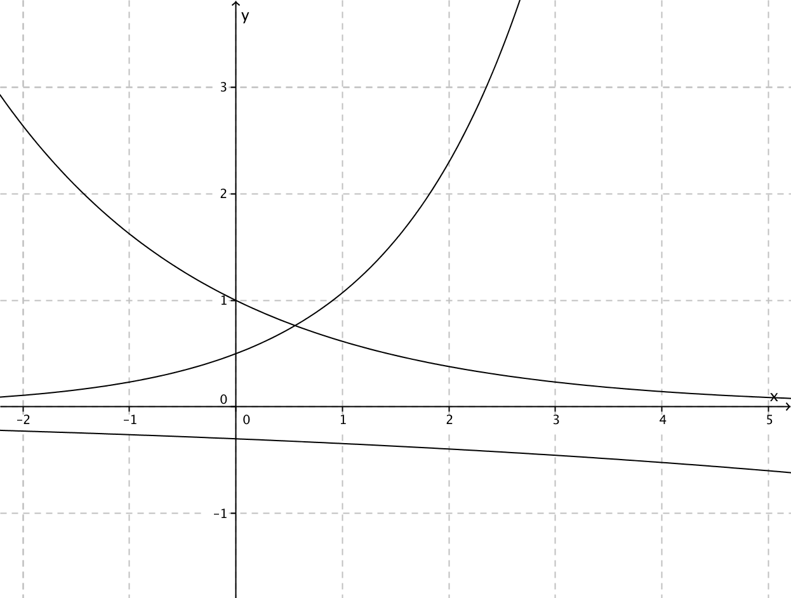
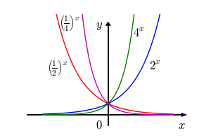
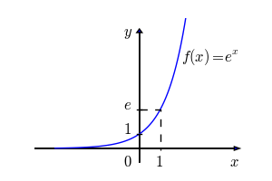
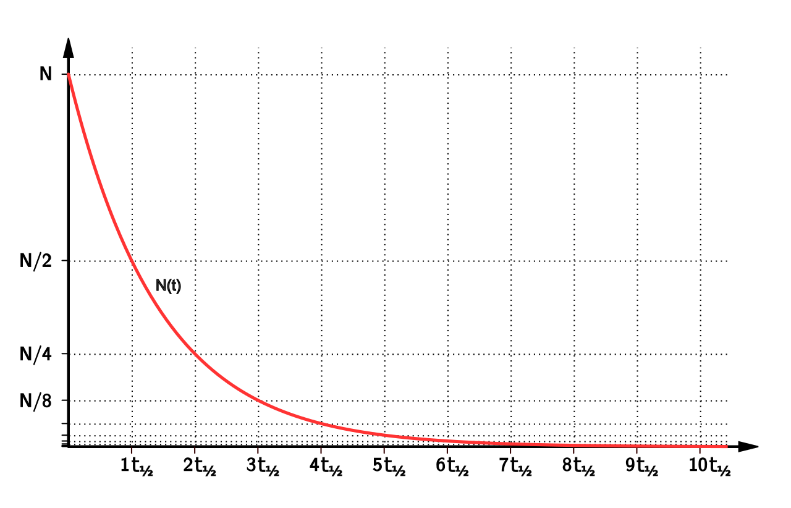

Exponential Functions
Up to now, the variable has always been on the ground floor: x, x2, x3. In this chapter the variable moves upstairs into the exponent, and everything changes. A function like 2x does not add the same amount each step — it multiplies by the same amount each step, and that single difference is why money in a savings account, a colony of bacteria, and a dose of medicine leaving the bloodstream all follow the same shape of curve. We will build the definition carefully, learn to read the graph at a glance, meet the strange and useful number e, and then turn all of it into models you can actually compute with. No prior comfort with exponents is assumed; we will re-derive what we need as we go.
By the end of this chapter you can
- Define an exponential function and explain why the base must satisfy b > 0 and b ≠ 1.
- Evaluate an exponential function at positive, zero, negative, and fractional inputs.
- Find the equation f(x) = a·bx from two points on the curve.
- Sketch and describe an exponential graph: growth vs. decay, the horizontal asymptote, domain, and range.
- Apply shifts, stretches, and reflections to y = bx and state the new asymptote and range.
- Explain where the number e comes from and evaluate the natural exponential function f(x) = ex.
- Build and use growth and decay models, including doubling time and half-life.
- Compute balances with both the periodic and the continuous compound interest formulas and compare them.
Section 1Exponential functions

The definition, one word at a time
An exponential function is a function of the form
f(x) = a · bx, where a ≠ 0, b > 0, and b ≠ 1.
Read that slowly. The number b is the base. The number a is the initial value, because when x = 0 we get f(0) = a·b0 = a·1 = a. And x — the variable, the thing that changes — sits in the exponent. That last detail is the entire point. In x2 the variable is the base and the exponent is fixed; in 2x the base is fixed and the variable is the exponent. They are completely different animals, and mixing them up is the single most common error in this chapter.
The practical meaning of "variable in the exponent" is this: every time x goes up by 1, the output gets multiplied by b. A linear function adds the same amount per step; an exponential function multiplies by the same amount per step. Watch it happen with f(x) = 3·2x:
| x | 3·2x written out | Value | Change from the row above |
|---|---|---|---|
| −2 | 3·2−2 = 3·(1)/(4) | 0.75 | — |
| −1 | 3·2−1 = 3·(1)/(2) | 1.5 | ×2 |
| 0 | 3·20 = 3·1 | 3 | ×2 |
| 1 | 3·21 = 3·2 | 6 | ×2 |
| 2 | 3·22 = 3·4 | 12 | ×2 |
| 3 | 3·23 = 3·8 | 24 | ×2 |
Worked example 1 — evaluating, every step shown. Let f(x) = 3·2x. Find f(0), f(3), and f(−2).
- f(0) = 3·20. Anything nonzero to the zero power is 1, so 20 = 1. Then 3·1 = 3.
- f(3) = 3·23. First 23 = 2·2·2 = 8. Then 3·8 = 24. (Exponent first, then multiply — order of operations. It is not (3·2)3 = 216.)
- f(−2) = 3·2−2. A negative exponent means reciprocal: 2−2 = (1)/(22) = (1)/(4). Then 3·(1)/(4) = (3)/(4) = 0.75.
Notice that the negative exponent did not produce a negative answer. It produced a small positive one. That is worth carrying with you: for a positive a, an exponential function never outputs zero and never outputs a negative number.
Why the base has rules
The definition attaches three restrictions, and each one exists for a concrete reason rather than to make your life harder.
Why b > 0. Suppose we allowed b = −4 and asked for f((1)/(2)) = (−4)1/2 = √(−4), which is not a real number. Suppose we allowed b = −2 and made a table: (−2)1 = −2, (−2)2 = 4, (−2)3 = −8. The signs flip back and forth and half the fractional inputs are undefined, so there is no smooth curve to graph. Requiring b > 0 keeps the function defined for every real x.
Why b ≠ 1. If b = 1 then f(x) = a·1x = a·1 = a for every input. That is a horizontal line — a constant function — and nothing about it is exponential. Excluding b = 1 keeps the definition honest.
Why a ≠ 0. If a = 0 then f(x) = 0·bx = 0 always — again a flat line, not a curve.
With those in place, the base tells you the whole story of the function's direction:
| Base | Behavior (for a > 0) | Name | Example |
|---|---|---|---|
| b > 1 | Output grows as x increases | Exponential growth | y = 2x, y = 1.05x |
| 0 < b < 1 | Output shrinks as x increases | Exponential decay | y = ((1)/(2))x, y = 0.85x |
| b = 1 | Output never changes | Not exponential (constant) | y = 1x = 1 |
| b ≤ 0 | Undefined for many inputs | Not allowed | (−4)x |
Finding the function from data
Worked example 2 — building f(x) = a·bx from two points. A curve passes through (0, 5) and (3, 40). Find its equation.
Step 1 — use the point with x = 0 to get a. Substituting x = 0 and f(0) = 5:
5 = a·b0 = a·1 = a, so a = 5.
Step 2 — substitute the second point. Using x = 3 and f(3) = 40:
40 = 5·b3
Step 3 — solve for b. Divide both sides by 5: (40)/(5) = b3, so 8 = b3. Take the cube root of both sides: b = ∛8 = 2. (Since the definition requires b > 0, we keep the positive root and there is no second answer to worry about.)
Step 4 — write it and check. f(x) = 5·2x. Check the first point: f(0) = 5·20 = 5·1 = 5. ✓ Check the second: f(3) = 5·23 = 5·8 = 40. ✓
Worked example 3 — solving when the bases can be matched. Solve 52x−1 = 125.
Step 1 — rewrite both sides with the same base. Since 125 = 5·5·5 = 53, the equation becomes 52x−1 = 53.
Step 2 — use the one-to-one property. Because an exponential function never repeats an output, if bm = bn then m = n. So 2x − 1 = 3.
Step 3 — solve the linear equation. Add 1 to both sides: 2x = 4. Divide by 2: x = 2.
Step 4 — check. 52(2)−1 = 54−1 = 53 = 125. ✓ No extraneous solutions can appear here, because we never squared, never multiplied by a variable expression, and never divided by anything containing x — every step was reversible. (When the bases cannot be matched, as in 2x = 7, you need logarithms; that is Chapter 12.)
- An exponential function is f(x) = a·bx with a ≠ 0, b > 0, b ≠ 1; the variable lives in the exponent.
- a is the initial value because f(0) = a; each unit increase in x multiplies the output by b.
- b > 1 gives growth; 0 < b < 1 gives decay; b = 1 gives a constant, which is why it is excluded.
- If bm = bn then m = n — the one-to-one property that lets you solve equations with matchable bases.
Section 2Graphs of exponential functions

The parent graph y = bx
Every exponential graph you will ever draw is a modified copy of one basic shape, so learn the basic shape cold. For y = bx with b > 0 and b ≠ 1:
- It always passes through (0, 1), because b0 = 1 no matter what b is.
- It always passes through (1, b), because b1 = b.
- The domain is all real numbers, (−∞, ∞) — you may raise a positive base to any power you like.
- The range is (0, ∞) — the output is always positive, never zero.
- The line y = 0 (the x-axis) is a horizontal asymptote: the curve gets arbitrarily close to it but never touches it. There is no x-intercept.
Why can the output never be zero? Because bx for negative x means a reciprocal: 2−10 = (1)/(210) = (1)/(1024), and 2−100 = (1)/(2100), a fantastically small but still positive number. You can shrink a positive number forever without ever reaching zero. That is exactly what an asymptote is.
Growth versus decay, and the reflection that connects them
If b > 1 the graph rises left-to-right: as x → ∞ the output blows up, and as x → −∞ it flattens toward the asymptote. If 0 < b < 1 the mirror image happens: the graph falls left-to-right, flattening toward the asymptote on the right and rocketing up on the left.
These two cases are not really separate. Watch:
((1)/(2))x = ((2)−1)x = 2−x
So a decay curve is just a growth curve reflected across the y-axis. Halving repeatedly and doubling backwards are the same motion viewed from opposite ends.
| Feature | y = 2x (growth) | y = ((1)/(2))x (decay) |
|---|---|---|
| Value at x = −2 | (1)/(4) = 0.25 | 4 |
| Value at x = 0 | 1 | 1 |
| Value at x = 2 | 4 | (1)/(4) = 0.25 |
| Direction | Rises to the right | Falls to the right |
| Asymptote | y = 0 (approached on the left) | y = 0 (approached on the right) |
| Domain / Range | (−∞, ∞) / (0, ∞) | (−∞, ∞) / (0, ∞) |
Transformations: moving the whole picture
The general transformed exponential is
g(x) = a·bx−h + k
and each letter does one job. The one that trips people up is k, so say it out loud: only the vertical shift moves the asymptote. Stretching does not move it. Horizontal shifting does not move it. Only adding or subtracting a constant at the end does.
| Change | What happens to the graph | New asymptote |
|---|---|---|
| bx + k | Shifts up k units (down if k < 0) | y = k |
| bx−h | Shifts right h units (left if h < 0) | y = 0 (unchanged) |
| a·bx, a > 1 | Vertical stretch by a factor of a | y = 0 (unchanged) |
| a·bx, 0 < a < 1 | Vertical compression | y = 0 (unchanged) |
| −bx | Reflection across the x-axis; range becomes (−∞, 0) | y = 0 (unchanged) |
| b−x | Reflection across the y-axis; growth becomes decay | y = 0 (unchanged) |
Worked example 4 — a full analysis. Describe and graph g(x) = 3·2x+1 − 5.
Step 1 — identify the pieces. Rewrite the exponent to match the template x − h: since x + 1 = x − (−1), we have h = −1. And a = 3, b = 2, k = −5.
Step 2 — apply the transformations in order, starting from y = 2x:
- Shift left 1 (because h = −1): y = 2x+1.
- Stretch vertically by 3: y = 3·2x+1.
- Shift down 5: y = 3·2x+1 − 5.
Step 3 — state the asymptote, domain, and range. The vertical shift is −5, so the horizontal asymptote is y = −5. Since a = 3 is positive, the curve sits above that line. Domain: (−∞, ∞). Range: (−5, ∞).
Step 4 — plot three honest points.
- x = −1: g(−1) = 3·2−1+1 − 5 = 3·20 − 5 = 3·1 − 5 = 3 − 5 = −2. Point (−1, −2).
- x = 0: g(0) = 3·20+1 − 5 = 3·2 − 5 = 6 − 5 = 1. Point (0, 1) — this is the y-intercept.
- x = 1: g(1) = 3·21+1 − 5 = 3·4 − 5 = 12 − 5 = 7. Point (1, 7).
Step 5 — check the far left. As x → −∞, 2x+1 → 0, so g(x) → 3·0 − 5 = −5. The curve flattens onto y = −5 from above, exactly as predicted. Note that this graph does cross the x-axis somewhere between x = −1 and x = 0 — setting 3·2x+1 − 5 = 0 gives 2x+1 = (5)/(3), and since (5)/(3) is not a power of 2 you would need a logarithm to finish. Shifting an exponential vertically is precisely what creates an x-intercept where the parent had none.
- The parent graph y = bx passes through (0, 1) and (1, b), has domain (−∞, ∞), range (0, ∞), and asymptote y = 0.
- b > 1 rises to the right; 0 < b < 1 falls to the right; and ((1)/(b))x = b−x, a y-axis reflection.
- In g(x) = a·bx−h + k, only k moves the asymptote, to y = k; the range becomes (k, ∞) if a > 0 and (−∞, k) if a < 0.
- A parent exponential has no x-intercept; a vertical shift can create one.
Section 3The number e

Where e comes from
Here is an honest, concrete question that produces e all by itself. Put $1 in an account paying 100% interest for one year. If the interest is paid once at the end, you finish with $2. But what if it is paid in n equal installments during the year, each installment being (1)/(n) of the rate, with each payment then earning interest itself? Your balance after one year is
(1 + (1)/(n))n
Crank up n and watch what happens. Splitting the year finer really does earn you more — but not without limit.
| Installments n | Meaning | (1 + 1/n)n |
|---|---|---|
| 1 | Once a year | 2.00000000 |
| 2 | Twice a year | 2.25000000 |
| 4 | Quarterly | 2.44140625 |
| 12 | Monthly | 2.61303529 |
| 365 | Daily | 2.71456748 |
| 8,760 | Hourly | 2.71812669 |
| 1,000,000 | Practically continuous | 2.71828047 |
The values climb, then stall, then converge on a specific irrational number. We call it e:
e ≈ 2.718281828459045…
Like π, e is irrational — its decimal expansion never terminates and never repeats — and like π it is a constant, not a variable. For hand estimates, e ≈ 2.718 is plenty; on your calculator, use the dedicated ex key rather than typing 2.718 and rounding early.
Sanity check on that first table row: for n = 2, (1 + (1)/(2))2 = (1.5)2 = 1.5·1.5 = 2.25. For n = 4, (1 + (1)/(4))4 = (1.25)4; step it out: 1.252 = 1.5625, then 1.56252 = 2.44140625. The table is doing arithmetic you can verify, not magic.
The natural exponential function
The function f(x) = ex is called the natural exponential function. Everything you learned in Section 2 applies unchanged, because e is simply a base with e > 1: the graph passes through (0, 1) and (1, e) ≈ (1, 2.718), has domain (−∞, ∞), range (0, ∞), and asymptote y = 0. Since 2 < e < 3, its graph lies snugly between y = 2x and y = 3x.
A few values worth knowing by feel: e0 = 1, e1 ≈ 2.71828, e−1 = (1)/(e) ≈ 0.36788, and e0.5 = √e ≈ 1.64872.
Continuous growth: A = A0ekt
Because e falls out of "compounding infinitely often," it is the natural base for anything that changes smoothly and constantly rather than in discrete jumps. The standard model is
A(t) = A0 ekt
where A0 is the amount at time t = 0 (check it: A(0) = A0e0 = A0·1 = A0) and k is the continuous or relative growth rate. If k > 0 the quantity grows; if k < 0 it decays.
Worked example 5 — continuous growth. An investment of $2,500 grows continuously at k = 0.06. Find its value after 10 years.
Step 1 — write the model. A(t) = 2500e0.06t.
Step 2 — substitute t = 10. A(10) = 2500e0.06(10).
Step 3 — simplify the exponent first. 0.06 × 10 = 0.6, so A(10) = 2500e0.6.
Step 4 — evaluate the exponential. e0.6 ≈ 1.8221188.
Step 5 — multiply. 2500 × 1.8221188 = 4555.297, so A(10) ≈ $4,555.30.
Step 6 — does it make sense? The money grew by a factor of about 1.82 in 10 years — not quite doubled — which is about right for a 6% rate. Good.
Worked example 6 — continuous decay. A sample starts at 500 units and decays continuously with k = −0.12 per year. How much remains after 5 years?
Step 1. N(t) = 500e−0.12t.
Step 2. N(5) = 500e−0.12(5) = 500e−0.6.
Step 3. e−0.6 = (1)/(e0.6) = (1)/(1.8221188) ≈ 0.5488116.
Step 4. 500 × 0.5488116 = 274.4058, so about 274.41 units remain.
Step 5 — sanity check. A negative k gave an answer smaller than the starting 500, and it stayed positive. Both are exactly what the model must do.
- e is the number that (1 + 1/n)n approaches as n grows without bound: e ≈ 2.71828.
- f(x) = ex is the natural exponential function — an ordinary growth exponential, since e > 1.
- A(t) = A0ekt models continuous change; k > 0 grows, k < 0 decays, and A0 is always the t = 0 amount.
- Simplify the exponent completely before evaluating, and round only at the very end.
Section 4Growth and decay models

Turning a percent into a base
Most real problems hand you a percent per period, not a base. Converting is the whole skill, and it is one line:
A(t) = A0(1 + r)t
where r is the rate per period written as a decimal. If the quantity grows 3% per year, r = +0.03 and the base is 1 + 0.03 = 1.03 (the growth factor). If it shrinks 15% per year, r = −0.15 and the base is 1 − 0.15 = 0.85 (the decay factor). Notice the base is 1 plus the rate, not the rate alone: multiplying by 0.03 would throw away 97% of the quantity, which is not what "grew 3%" means.
| Situation | Rate r | Base (1 + r) | Model |
|---|---|---|---|
| Grows 3% per year | +0.03 | 1.03 | A0(1.03)t |
| Grows 7.5% per year | +0.075 | 1.075 | A0(1.075)t |
| Falls 15% per year | −0.15 | 0.85 | A0(0.85)t |
| Falls 40% per year | −0.40 | 0.60 | A0(0.60)t |
| Doubles every d periods | — | 2 | A0·2t/d |
| Halves every h periods (half-life) | — | (1)/(2) | A0·((1)/(2))t/h |
Worked example 7 — population growth. A town of 12,000 people grows 3% per year. Predict the population in 20 years.
Step 1 — identify the pieces. A0 = 12,000; r = 3% = 0.03; t = 20 years.
Step 2 — build the base. 1 + r = 1 + 0.03 = 1.03.
Step 3 — write the model. P(t) = 12000(1.03)t.
Step 4 — substitute. P(20) = 12000(1.03)20.
Step 5 — evaluate the power. (1.03)20 ≈ 1.8061112. (If you want to see it built by hand: 1.032 = 1.0609, 1.034 = 1.06092 = 1.12550881, 1.0310 ≈ 1.3439164, and 1.0320 = (1.0310)2 ≈ 1.8061112.)
Step 6 — multiply. 12000 × 1.8061112 = 21673.33, so about 21,673 people.
Step 7 — interpret. Since people come in whole numbers, we round to the nearest person. Note that 3% per year for 20 years grew the town by roughly 81%, not 60% — because each year's 3% is taken from a larger base than the year before.
Doubling time and half-life
Sometimes you are told how long the quantity takes to double or to halve, and no percent appears at all. Those cases have their own clean forms.
Doubling time d: A(t) = A0·2t/d. The exponent t/d literally counts "how many doublings have happened by time t."
Half-life h: A(t) = A0·((1)/(2))t/h. Same idea, counting halvings. A half-life is the time required for exactly half of whatever remains to disappear — and crucially, it is always the same length no matter how much is left.
Worked example 8 — doubling time. A bacterial culture starts with 400 cells and doubles every 3 hours. How many cells after 12 hours?
Step 1. A0 = 400, d = 3 hours, t = 12 hours.
Step 2 — write the model. A(t) = 400·2t/3.
Step 3 — evaluate the exponent. t/d = 12/3 = 4. So four doublings have occurred.
Step 4 — evaluate the power. 24 = 2·2·2·2 = 16.
Step 5 — multiply. 400 × 16 = 6,400 cells.
Step 6 — check by hand. 400 → 800 (3 h) → 1,600 (6 h) → 3,200 (9 h) → 6,400 (12 h). ✓
Worked example 9 — half-life, including a non-whole number of halvings. An isotope has a half-life of 8 days. A 200 mg sample is prepared. (a) How much remains after 24 days? (b) After 20 days?
(a) Step 1. A(t) = 200·((1)/(2))t/8.
Step 2. At t = 24: t/h = 24/8 = 3, so three half-lives have passed.
Step 3. ((1)/(2))3 = (1)/(8).
Step 4. 200 × (1)/(8) = (200)/(8) = 25 mg. Confirm by halving: 200 → 100 → 50 → 25. ✓
(b) Step 1. At t = 20: t/h = 20/8 = 2.5. A fractional number of half-lives is perfectly legal — the formula does not require whole ones.
Step 2. ((1)/(2))2.5 = (1)/(22.5). Now 22.5 = 22·20.5 = 4·√2 ≈ 4 × 1.4142136 = 5.6568542.
Step 3. (1)/(5.6568542) ≈ 0.1767767.
Step 4. 200 × 0.1767767 = 35.35534, so about 35.36 mg.
Step 5 — is it believable? At 16 days (two half-lives) we would have 50 mg; at 24 days (three) we would have 25 mg. Our 20-day answer of 35.36 mg sits between them, closer to the middle. ✓
Worked example 10 — depreciation. A $28,000 car loses 15% of its value each year. What is it worth after 5 years?
Step 1. A0 = 28,000; r = −0.15; base = 1 − 0.15 = 0.85.
Step 2. V(t) = 28000(0.85)t, so V(5) = 28000(0.85)5.
Step 3 — build the power step by step. 0.852 = 0.7225. 0.854 = (0.7225)2 = 0.52200625. 0.855 = 0.52200625 × 0.85 = 0.4437053.
Step 4. 28000 × 0.4437053 = 12423.75, so the car is worth about $12,423.75.
Step 5 — the trap. It is tempting to say "15% × 5 years = 75% lost, so 25% of $28,000 = $7,000." That is wrong. The correct answer, $12,423.75, is about 44% of the original — because each year's 15% comes off a smaller and smaller amount.
- A(t) = A0(1 + r)t; the base is 1 + r, with r positive for growth and negative for decay.
- Doubling every d periods: A0·2t/d. Half-life h: A0·((1)/(2))t/h.
- A half-life is the same length regardless of how much material remains, and the exponent t/h need not be a whole number.
- Never multiply a percent rate by the number of periods — exponential change compounds on a shifting base.
Section 5Compound interest

The periodic formula, decoded
Compound interest is the exponential model of Section 4 with the vocabulary of finance bolted on:
A = P(1 + (r)/(n))nt
| Symbol | Name | What to put in |
|---|---|---|
| A | Final amount | What you are solving for (principal plus interest) |
| P | Principal | The starting deposit |
| r | Annual rate | As a decimal: 6% becomes 0.06 |
| n | Compounds per year | Annually 1, semiannually 2, quarterly 4, monthly 12, daily 365 |
| t | Time | In years (9 months = 0.75 year) |
The logic is transparent once you see it: r/n is the interest rate applied at each compounding, and nt is the total number of compoundings over the whole term. Interest earned early then earns interest itself, which is what makes the graph a curve and not a line.
Worked example 11 — monthly compounding. Deposit $5,000 at 6% annual interest, compounded monthly, for 10 years.
Step 1 — list the values. P = 5000; r = 6% = 0.06; n = 12; t = 10.
Step 2 — compute the periodic rate. (r)/(n) = (0.06)/(12) = 0.005. So each month earns 0.5%.
Step 3 — compute the base. 1 + 0.005 = 1.005.
Step 4 — compute the exponent. nt = 12 × 10 = 120 compoundings.
Step 5 — assemble. A = 5000(1.005)120.
Step 6 — evaluate the power. (1.005)120 ≈ 1.8193967.
Step 7 — multiply. 5000 × 1.8193967 = 9096.9835, so A ≈ $9,096.98.
Step 8 — interest earned. 9096.98 − 5000 = $4,096.98 in interest. (Simple interest would have paid only 5000 × 0.06 × 10 = $3,000.)
The continuous formula
Section 3 showed that squeezing more and more compoundings into a year drives (1 + 1/n)n toward e. Doing the same to the compound interest formula gives the continuous compounding formula:
A = P ert
with the same P, decimal r, and t in years — and no n at all, because "continuously" means the compounding never stops long enough to count.
Worked example 12 — continuous compounding, same account. $5,000 at 6% compounded continuously for 10 years.
Step 1. P = 5000; r = 0.06; t = 10.
Step 2 — exponent first. rt = 0.06 × 10 = 0.6.
Step 3. A = 5000e0.6.
Step 4. e0.6 ≈ 1.8221188.
Step 5. 5000 × 1.8221188 = 9110.594, so A ≈ $9,110.59.
Step 6 — compare. Continuous beat monthly by 9110.59 − 9096.98 = $13.61 over ten years. Real, but small — which is the honest lesson of the next table.
| Compounding | n | Setup | Balance after 10 years |
|---|---|---|---|
| Annually | 1 | 5000(1.06)10 | $8,954.24 |
| Semiannually | 2 | 5000(1.03)20 | $9,030.56 |
| Quarterly | 4 | 5000(1.015)40 | $9,070.09 |
| Monthly | 12 | 5000(1.005)120 | $9,096.98 |
| Daily | 365 | 5000(1 + 0.06/365)3650 | $9,110.14 |
| Continuously | — | 5000e0.6 | $9,110.59 |
Every extra compounding helps, but by less and less. Going from annual to monthly bought $142.74; going from daily to continuous bought 45 cents. Continuous compounding is the ceiling that all the others approach and none can exceed — the financial face of the limit that defines e.
Effective annual yield
Two accounts advertising "6%" are not the same account if one compounds annually and the other monthly. The effective annual yield (or APY) converts any compounding schedule into the single annual rate that would produce the same one-year result, so you can compare fairly.
Worked example 13 — effective yield. Find the effective annual yield of 6% compounded monthly, and of 6% compounded continuously.
Monthly, Step 1. Run the formula for one year with P = 1: A = 1(1 + (0.06)/(12))12(1) = (1.005)12.
Step 2. (1.005)12 ≈ 1.0616778.
Step 3 — subtract the original 1 to isolate the gain. 1.0616778 − 1 = 0.0616778.
Step 4 — convert to percent. 0.0616778 × 100 ≈ 6.17%.
Continuously, Step 1. A = 1·e0.06(1) = e0.06 ≈ 1.0618365.
Step 2. 1.0618365 − 1 = 0.0618365 → 6.18%.
Step 3 — read the result. A nominal 6% is really worth 6.17% monthly and 6.18% continuously. The stated rate is not the rate you actually earn.
- Periodic: A = P(1 + (r)/(n))nt, with r as a decimal, n compoundings per year, t in years.
- Continuous: A = Pert — no n, because compounding never pauses.
- More frequent compounding always earns more, but with rapidly shrinking gains; continuous compounding is the upper limit.
- Effective annual yield = (one-year growth factor) − 1, expressed as a percent; it is how you compare accounts honestly.
The chapter in one breath
- An exponential function is f(x) = a·bx with a ≠ 0, b > 0, b ≠ 1 — the variable lives in the exponent, so each unit step multiplies the output by b.
- a is the initial value since f(0) = a; b > 1 gives growth and 0 < b < 1 gives decay, and ((1)/(b))x = b−x connects the two by a reflection.
- The parent graph passes through (0, 1) and (1, b), has domain (−∞, ∞), range (0, ∞), asymptote y = 0, and no x-intercept.
- In g(x) = a·bx−h + k, only k moves the asymptote — to y = k — and the range shifts with it.
- e ≈ 2.71828 is the limit of (1 + 1/n)n, and A(t) = A0ekt is the model for smooth, continuous change.
- Percent problems become exponentials through the base 1 + r; doubling time gives A0·2t/d and half-life gives A0·((1)/(2))t/h.
- Compound interest is A = P(1 + r/n)nt periodically and A = Pert continuously; more compoundings earn more, but continuous is the ceiling.
- Percent change never adds across periods, and rounding r/n early is the classic way to get a nearly-right, actually-wrong answer.
ReferenceWords worth knowing
A quick reference for the vocabulary of this chapter — skim it now, and come back to it whenever a word in a problem stops you cold.
- Asymptote (horizontal)
- A horizontal line the graph approaches ever more closely without touching. For y = a·bx−h + k it is y = k.
- Base
- The fixed positive number b being raised to the variable power in f(x) = a·bx; it must satisfy b > 0 and b ≠ 1.
- Compound interest
- Interest paid on the principal and on previously earned interest, computed by A = P(1 + r/n)nt.
- Continuous compounding
- The limiting case in which interest is credited without pause, giving A = Pert; it produces the largest balance for a given nominal rate.
- Decay factor
- The base 1 − r when a quantity shrinks by rate r each period; it lies strictly between 0 and 1.
- Doubling time
- The constant time d required for a growing quantity to become twice as large, giving the model A0·2t/d.
- e (Euler's number)
- The irrational constant approximately 2.718281828, defined as the value (1 + 1/n)n approaches as n grows without bound.
- Effective annual yield (APY)
- The single annual rate that would produce the same one-year growth as a given compounding schedule; equals the one-year growth factor minus 1.
- Exponential decay
- Exponential change with base 0 < b < 1 (or continuous rate k < 0); the quantity shrinks by a constant factor per period.
- Exponential function
- A function f(x) = a·bx with a ≠ 0, b > 0, b ≠ 1, in which the variable appears in the exponent.
- Exponential growth
- Exponential change with base b > 1 (or continuous rate k > 0); the quantity grows by a constant factor per period.
- Growth factor
- The base 1 + r when a quantity increases by rate r each period; it is greater than 1.
- Half-life
- The constant time h required for exactly half of a decaying quantity to disappear, giving A0·((1)/(2))t/h; it does not depend on how much remains.
- Initial value
- The coefficient a (or A0, or P), equal to the output at x = 0 because b0 = 1.
- Natural exponential function
- The function f(x) = ex, the exponential function whose base is e.
- One-to-one property of exponents
- For b > 0 and b ≠ 1, if bm = bn then m = n; this is what lets you solve equations by matching bases.
- Principal
- The starting amount P deposited or borrowed, before any interest is added.
- Range
- The set of possible outputs. For y = a·bx−h + k it is (k, ∞) when a > 0 and (−∞, k) when a < 0.
- Relative growth rate
- The constant k in A(t) = A0ekt, expressing continuous growth (k > 0) or decay (k < 0) per unit time.
- Transformation
- A shift, stretch, compression, or reflection applied to a parent graph to produce a related graph.
- Vertical stretch
- Multiplication of all outputs by a factor a > 1, pulling the graph away from the x-axis; 0 < a < 1 compresses it instead.